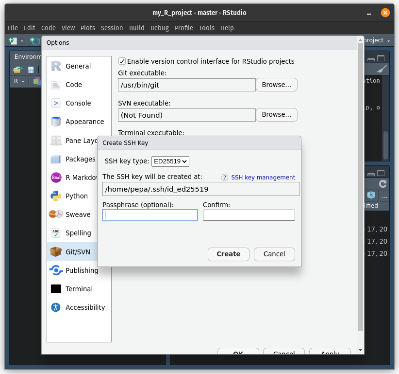
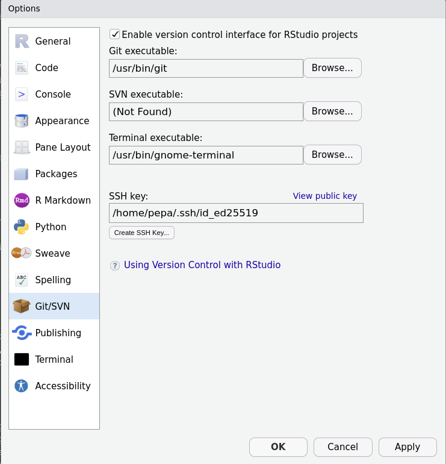

Chapter 1 Getting started
Chapter lead author: Pepa Arán
1.1 Learning objectives
This chapter provides a start at the very beginning of your journey in Applied Geodata Science with two main aims. First, it introduces the very basics for readers with no experience using R. You will be able to:
- Work with R and RStudio.
- Know basic R objects and classes.
- Understand how R interacts with files in your computer.
Second, the tutorial of this chapter prepares you for your work on the remainder of this course by setting up all the necessary infrastructure. Also experienced R users should follow respective tutorial sections: Sec. 1.2.6, 1.2.7, and 1.2.8). You will:
- Organize your workspace for efficient data science projects.
- Have installed git and all R packages used throughout the book.
Completing these points are essential before we go deeper into project management topics in Chapters 6 and 7. Chapter 2 will focus on how to code.
1.2 Tutorial
1.2.1 Working with R and RStudio
R is a free, open-source programming language and software environment for statistical computing and graphics. It is widely used, not only among statisticians and data miners for developing statistical software, but also by scientist in various domains for data analysis, visualisation, and modelling. RStudio is an integrated development environment (IDE) that provides a user-friendly “center stage” for your work in R (and Python, see here).
1.2.1.1 Installing R and RStudio
To use R and RStudio, you will first need to download and install them on your computer.
To install R, go to the CRAN website and download the latest version of R for your operating system. Once the download is complete, follow the on-screen installation instructions for your operating system to install R.
To install RStudio, go to the RStudio website and download the latest version of RStudio for your operating system. Once the download is complete, follow the installation instructions for your operating system to install RStudio.
1.2.1.2 The RStudio interface
RStudio provides a user-friendly interface for writing, running, and debugging R code. When you open RStudio, you will see the following:

Figure 1.1: RStudio interface.
The interface is divided into four main panels:
- The source editor is where you can write, edit, and save your R code.
- The console is where you can enter R commands and see the output.
- The environment panel shows you the objects (variables, data frames, etc.) that are currently in your R session, as well as their values.
- The files, plots, help, etc. panel shows you the files, plots, and other items that are currently in your R workspace, as well as help and documentation for R functions and packages. We will cover this in more detail later in this course.
1.2.1.3 Running R code
Once you have both programs installed, you can open RStudio and begin a new R session. To run R code using R Studio, follow these steps:
- In the source editor panel, type your R code.
- To run the code, you can either press the Run button or use the keyboard shortcut Ctrl + Enter (Windows) or Command + Enter (Mac).
- The code will be executed in the console panel, and any output will be displayed there.
- Alternatively, you can directly type single-statement R commands in the console and run them by pressing Enter.
For example, let’s say you want to calculate the sum of the numbers 1, 2, and 3. You can write the following code in the console or in the source editor:
# Calculate the sum of 1, 2, and 3
1 + 2 + 3## [1] 6If you’ve entered it in the console, press Enter. If you’ve entered it in the source editor, you can press the Run button or use the keyboard shortcut to run the code. The output will be displayed in the console:
> 1 + 2 + 3
[1] 61.2.1.4 Base R operations
The R {base} package contains the basic functions which let R function as a programming language: arithmetic, input/output, basic programming support, etc. Its contents are always available when you start an R session. Here we introduce the main binary operators, which work on vectors, matrices and scalars.
Arithmetic operators:
+addition-subtraction*multiplication/division^or**exponentiation%%modulo operator (returns remainder of a division)
Logical operators:
>greater than>=greater than or equal to==exactly equal to<less than<=less than or equal to!=not equal
1.2.2 R objects
In addition to running single statements in the R console, the output of a statement can be saved as a new object. There are many kinds of R objects, some of which are covered here and in future chapters.
1.2.2.1 Types of data
First, we will introduce the different types of data that one can encounter. We can classify variables according to what values they take.
- Numerical: These variables can be measured quantitatively and their value is a number.
- Continuous: We say that a variable is continuous when it can take an infinite number of real values within an interval. One could consider unbounded variables (height above sea level) or restricted variables, like positive variables (weight of a person) or an interval (a proportion between 0 and 1).
- Discrete: When the variable can only take a finite number of values in an interval, we say it is discrete. A common example is count data, like the population of a city.
- Categorical: The values are characteristics that cannot be quantified.
- Binary: These variables have two possible values:
TRUEorFALSE(a variable indicating whether the person has siblings or not). - Nominal: They describe a name, label, or category without a natural order (for example, the name of a person).
- Ordinal: Like their name indicates, ordinal variables are categorical and follow a natural order. For example, “terrible”, “bad”, “neutral”, “good”, “great”. A numerical variable can sometimes be discretized and put into categories, like dividing a person’s age into age groups (bins) “toddler”, “child”, “teenager”, “adult”.
- Binary: These variables have two possible values:
Next, we will see how these different types of variables can be treated in R.
1.2.2.2 Variables and classes
In R, a variable is a named location in memory that stores a value. To create a variable, you simply assign a value to a name using the <- operator (or the = operator, which has an equivalent role when assigning values to a variable, but <- is preferred). For example:
my_variable <- 5This code creates a variable called my_variable and assigns the value 5 to it. You can access the value of a variable or any other object by simply referring to its name, like this:
my_variable## [1] 5When you run this code, the value of my_variable will be printed to the console. Running print(my_variable) is an alternative syntax, using the print() function.
In R, every object and value has a class that determines how it is stored and how it behaves. For example, the 5 in our example above is a number, so its class is numeric. To find out the class of a value or a variable, you can use the class() function, like this:
class(5)## [1] "numeric"class(my_variable)## [1] "numeric"The most basic classes are:
numeric(num) - any real number, e.g.2.375integer(int) - integer numbers, e.g.2character(chr) - any string, e.g.,"fluxes"logical(logi) - binary, i.e., eitherTRUEorFALSE.factor(Factor) - categorical data, the variable can only be one of a defined number of options, e.g., one of C3, C4, or CAM (the three pathways of photosynthesis). Factors may also be given an order.function- a set of statements organized to perform a specific task, for examplemean()
By default, any number is coerced as "numeric". So if you want an integer value to have class "integer", you need to specify it like this:
my_variable <- as.integer(5)
class(my_variable)## [1] "integer"Sometimes, you need to convert the class of an object, for example turning an "integer" number into a "character". You can do so as follows:
my_variable <- as.character(my_variable)
my_variable## [1] "5"class(my_variable)## [1] "character"Note that now, the values are in quotes "5". This way, R interprets it as a text and you will not be able to do any numeric calculations with it anymore.
1.2.2.3 Vectors
A vector in R is a sequence of data elements of the same class. Vectors can be created with the c() function, which stands for concatenate, i.e., to link together in a series or chain. For example, the following code creates a numeric vector:
x <- c(1, 2, 3, 4, 5)To access the elements of a vector, you can use the square bracket notation. For example, the following code retrieves the second element of the vector x:
x[2]## [1] 2You can also use the square bracket notation to extract a sub-vector from a larger vector. For example, you can extract the second to fourth elements of the vector x:
x[2:4]## [1] 2 3 4Another useful property of vectors in R is that they can be easily combined using arithmetic operators. For example, adding the elements of two vectors x and y element-wise:
x <- c(1, 2, 3)
y <- c(4, 5, 6)
x + y## [1] 5 7 9R also supports vectors of other classes, for example character vectors. Since all elements must be of the same class, the most general class will be adopted. The following code concatenates the vectors x and y, followed by new character elements:
z <- c(x, y, "seven", "eight")
z## [1] "1" "2" "3" "4" "5" "6" "seven" "eight"class(z)## [1] "character"Operations on vectors are performed element-wise. For example, if we ask what numbers in x are greater than 2, we obtain a vector of logical values (and class "logical"):
x > 2## [1] FALSE FALSE TRUEVectors that contain sequences of numbers are often needed in programming. They are easily created in R, e.g., by:
1:10## [1] 1 2 3 4 5 6 7 8 9 10More flexibility is offered by the seq() function:
seq(from = 0, to = 10, by = 2)## [1] 0 2 4 6 8 10Often, we need to evaluate multiple elements in a vector. We’ve learned that the operator > tests whether the value left to it is greater than the value on its right and returns a logical. We can subset a vector based on a vector of equal length that contains logicals.
x > 1## [1] FALSE TRUE TRUEx## [1] 1 2 3x[x > 1]## [1] 2 3We can also determine the indices (positions of elements in the vector) that evaluate to TRUE, or that have the lowest value:
which(x > 1)## [1] 2 3which.min(x)## [1] 1Elements can be dropped from vectors by referring to indices:
y[-2]## [1] 4 61.2.2.4 Lists
Lists are R objects, of class "list". They are a bit like vectors, but more flexible. They allow us to store different types of data, even if they are of different lengths or of different classes. They are created with the function list() and can be named or not. Here is an example where each element of the list is named.
mylist <- list(
temperatures = c(2.234, 1.987, 4.345),
my_favourite_function = mean,
my_favourite_course = "Applied Geodata Science"
)Similar to vectors, we can extract elements from lists, either by index [[1]] or by the name using [["temperatures"]] or $temperatures. Note the double [[]] here, indicating an element of a list as opposed to [] indicating an element of a vector. To get the entire vector of temperatures, do either of the three:
mylist[[1]]## [1] 2.234 1.987 4.345mylist[["temperatures"]]## [1] 2.234 1.987 4.345mylist$temperatures## [1] 2.234 1.987 4.345Note below how, if we index the list like we would index a vector, a list with just one element would be returned, rather than the element itself. [ is used to subset a list (and a list is returned). In contrast, [[ or $ extract a single element from a list. A thorough explanation of these differences is given here and here.
mylist[1] # returns a subset of the list as a new list## $temperatures
## [1] 2.234 1.987 4.345mylist[[1]] # extracts the first element of the list (a vector)## [1] 2.234 1.987 4.345To get the first temperature value, which is an element of the vector (at the same time an element of the list), we can run:
mylist[["temperatures"]][1]## [1] 2.234You can also append elements to the list (either way is possible):
mylist[["my_second_favourite_function"]] <- median
mylist$my_second_favourite_function <- medianThis was a very condensed introduction to vectors and lists. A more complete introduction is given here.
1.2.2.5 Data frames
A data frame, an object of class "data.frame", is essentially a table, consisting of named columns and rows. A data frame can be created as follows:
df <- data.frame(name = c("Maria", "Peter", "Alex", "Charlie"),
age = c(13, 56, 30, 42),
is_married = c(FALSE, TRUE, TRUE, FALSE))
df## name age is_married
## 1 Maria 13 FALSE
## 2 Peter 56 TRUE
## 3 Alex 30 TRUE
## 4 Charlie 42 FALSEA data frame can also be understood as a list of vectors of equal length, whereby each vector vector makes up a column and each of these vectors (columns) contains values of the same type. This notion makes it also evident that the elements of a data frame can be accessed the same way like we access elements of lists. To get the vector corresponding to the column named age, we can do:
df$age## [1] 13 56 30 42Data frames can be also be treated as a matrix. Note that the first index refers to rows and the second to columns. For example:
df[, 1] # first column (returns a vector)## [1] "Maria" "Peter" "Alex" "Charlie"df[2, ] # second row (returns a data frame)## name age is_married
## 2 Peter 56 TRUEdf[2,2] # age of Peter (returns a scalar)## [1] 56The method of selecting parts of a data frame by index is quite flexible. For example, we may require the information in the third column for the first three rows. Putting a colon between two numbers, e.g. [1:3,], indicates we want to select the rows numbers starting at the first and ending with the second number. So here [1:3,] will give us rows one, two and three. This can be combined with subsetting for the other dimension as well:
df[1:3, 3]## [1] FALSE TRUE TRUETo reduce the data frame to fewer columns/rows that are not contiguous, the function c() is used. This outputs the data frame reduced to the selected row or column numbers inside c(). Another method is to select the columns by column names, i.e. giving as input a string vector with the name of each column we want to select. For example, the following commands give the same output:
df[, c(1,3)] # select by column index## name is_married
## 1 Maria FALSE
## 2 Peter TRUE
## 3 Alex TRUE
## 4 Charlie FALSEdf[, c("name", "is_married")] # select by column name## name is_married
## 1 Maria FALSE
## 2 Peter TRUE
## 3 Alex TRUE
## 4 Charlie FALSEThere are several base R functions to help you understand the structure of a data frame. Here is a non-exhaustive list of of them:
- Size
dim()- Returns the dimensions of an object (here: number of rows and columns).nrow()- Returns the number of rows of an object.ncol()- Returns the number of columns of an object.
- Content
head()- Returns the first 6 rows.tail()- Returns the last 6 rows.View()- Opens a window in the source panel in RStudio where you can look at the entire data set in the form of a table.
- Names
names()- Returns the column names (fordata.frameobjects it is synonymous tocolnames()).rownames()- Returns the row names.
For example, the data frame df has 4 rows and 3 columns:
dim(df)## [1] 4 3There are many more things you can do with data frames. Since they are central to analyzing data with R, we have dedicated all of Chapter 3 to teach you how to work with data frames in a tidy way with the {tidyverse} collection of packages.
1.2.2.6 Functions
R functions can be applied to an object (or several objects) and return another object. For example, the mean() function can take a numeric vector as input and output the mean of its elements.
mean(df$age)## [1] 35.25Functions are also R objects and have class "function". Writing your own functions is an essential part of good programming and will be introduced in Chapter 2.
1.2.2.7 Missing values
R has two representations for missing values: NA and NULL. Similar objects also exist in other programming languages.
NA is an identifier to mark missing data and stands for not available. You will encounter this when reading data into a data frame, and some of its cells show NA because that value is missing. Also, if you ask for the fourth element of a vector of length 3, R returns NA.
x[4]## [1] NAIn general, operations on vectors that contain at least one NA value return NA. For example:
mean(c(1, 2, NA))## [1] NATo remove all missing values in the function evaluation, the common argument to set in the respective function call is na.rm. By default, it is usually set to FALSE, but we can do:
mean(c(1, 2, NA), na.rm = TRUE)## [1] 1.5Furthermore, NA counts as an element in vectors. A variable assigned just NA would have length 1 (of class "logical") and the vector above has length 3, as can be determined using the length() function, and has class "numeric".
Whether a value is missing can be tested by:
is.na(c(1, 2, NA))## [1] FALSE FALSE TRUEBy contrast, NULL is the R null object or empty space. You can also assign NULL to a variable, which will then have length zero because it is empty. Functions may return NULL when no output was defined, or if an error occurred.
1.2.2.8 Read and save objects
The function save() allows to save multiple R objects of any form as a single .RData file. This is how the environment of your R session is saved. This is how we would save several R objects:
save(df, df_small, file = "./data/data_frames.RData")To tell the function where the data is located, pass the data’s path as an argument. You can either use an absolute path, starting from C:/ on a Windows computer or ~/ on a Mac or Linux. Or, alternatively, you can provide a relative path, where ./ points to the present working directory (like above) and ../ is one level up, or ../../ is two levels up, etc. We recommend that you work with R projects and use relative paths, because the working directory is set to the root directory of the R project and relative paths will also work on another person’s computer, helping with reproducibility. To determine your current working directory, run getwd().
.RData files are read into your environment using the load() function. This function loads the objects with the name that they were saved with.
load("./data/data_frames.RData")Alternatively, the function saveRDS() allows you save single R objects that can then be read into R with a specific (potentially new) variable name. This is more transparent than using save() and load(), and thus is preferred, as it gives the user more control over variable names.
saveRDS(df_small, file = "./data/df_small.rds")
df_small_2 <- readRDS("./data/df_small.rds")save() and saveRDS() create binary files that are fast to write and read, but only intelligible to R (and not to the human eye or another program). Such files are commonly identified by the suffix .rds. It is recommended to name the .rds files according to the single object they contain. When publishing and sharing data, follow Open Science principles (Chapter 6) and avoid file formats that are not readable across different platforms and programming languages. We will learn more about human-readable tabular data files like CSV in Chapter 3 and other open source binary file formats in Chapter 5.
1.2.3 R environment
The set of objects (variables, data frames, etc.) defined during an R session are referred to as the environment. You can view the objects in RStudio in the environment panel in R Studio, grouped as Data, Values and Functions.
After closing an existing R session (e.g., after quitting RStudio), the environment defined by the used during that session will not be saved automatically and will not be available in your next R session. You should avoid saving your entire environment. Rather, save individual objects into files and read them in explicitly in the next R session, as described above. This gives you control, transparency, and ensures better reproducibility.
1.2.4 Libraries
Packages, also called libraries, are collections of R functions, data, and complied code in a well-defined format. R comes with a standard set of packages (including {base} R, {utils}, {stats}…) and other packages targeted for specific applications are available for download and installation. Once installed, you need to load them each time you start a new R session to use them.
For example, the {tidyverse} package is used for data wrangling and will be covered in this course. This is a special package which loads many other packages in the background (like {readr}, {ggplot2}, etc.). You can install a new package as follows:
install.packages("tidyverse")Then, you can load it with the following code. Note that now the name of the package is not in quotation marks.
library(tidyverse)You can now use the functions and features provided by the {tidyverse} package in your R scripts.
At any time, you can see a list of your installed packages on the source panel with the following command:
library()And a list of the packages currently loaded:
search()## [1] ".GlobalEnv" "package:stats" "package:graphics"
## [4] "package:grDevices" "package:datasets" "renv:shims"
## [7] "package:utils" "package:methods" "Autoloads"
## [10] "package:base"This information can also be found on the Packages panel in RStudio. The loaded packages are shown with a tick mark.
1.2.5 R scripts
Usually, multiple statements are needed to get, e.g., from reading data into R to final numbers and figures that make up a further analysis. Together, these multiple statements constitute a workflow. It is essential that all workflows that underlie results of publications are reproducible, that is, that another person can replicate your results using your code and certain data.
To make a workflow reproducible, the sequence of statements that you needed to carry out your analysis and produce outputs can be saved as an R script. A script is a text file named with the suffix .R to indicate that it is executable by R. It contains a sequence of R commands, which you can be executed, line by line, starting from the top.
To create a new script in RStudio, go to the File menu and select New File > R Script. This will open a new script file in the source editor. You can then type your R code in the script file and save it to your computer.
To run a script, you can either use the Source button in the source editor or use the keyboard shortcut Ctrl + Shift + Enter (Windows) or Command + Shift + Enter (Mac). This will run all of the commands in the script file, in the order they are written, in the console. Alternatively, you can type into the console:
> source("my_r_script.R")Note that, to be able to run the code above, the file my_r_script.R must be in your current working directory. You must always specify the path to the file, also when sourcing code.
1.2.6 R Markdown
R Markdown files are an enhanced version of scripts. They combine formatted text and executable code chunks. They can either be compiled (knitted) into an HTML or PDF output, where code chunks are executed upon compilation and visualization outputs are directly placed into the output, or they can be run like a script entirely or each code chunk separately. Rmarkdown is ideal for reporting, i.e., writing your final document presenting your analysis results. When opened in RStudio, RMarkdown files appear in the Editor like this:

Figure 1.2: R Markdown document opened in the source panel.
As shown in Fig. 1.2, an RMarkdown file consists of a header that specifies the document properties, such as how it should be rendered (as an html page, a docx file or a pdf).
---
title: "Simple global map"
author: Alex Humboldt
output: html_document
---Below the header follow the contents as either text or code chunks. Text is formatted using the Markdown syntax. Nice brief guides are provided here or here. For example, a top-level section title is specified by # and a title of a section one level lower by ##.
Code chunks that contain executable R code are opened by a line ```{r}.
The document can be rendered by calling rmarkdown::render() on the command line or hitting the Knit button in the RStudio IDE. Depending on your settings a html file, pdf or docx file will be generated in your current directory (and or displayed in the IDE viewer). The RMarkdown source file shown in Fig. 1.2 is rendered to:

Figure 1.3: Rendered HTML output.
Note that the code chunk produced a figure as an output which was placed directly in the rendered html. This demonstrates the usefulness of RMarkdown as notebooks to document entire workflows and make their outputs reproducible.
To create a new RMarkdown file, select from the drop-down menu in the top-left corner of RStudio as shown below:
Figure 1.4: Create a new RMarkdown file
1.2.7 Workspace management
Workspace management is crucial for efficient data science projects. Two aspects are essential for workspace management: The structure of directories and the types of files they contain; and code management and version control. To address these two points, we will briefly introduce you to R projects and git.
1.2.7.1 R projects
Think of all files that are linked to a certain data science workflow as belonging together into one project. A project is therefore a directory that contains the code and the files it produces. Different types of files go in different sub-directories with descriptive names. To keep an order and make your code useful also for others, always keep files of the same type in sub-directories that are always named the same way across projects. When creating a new project, you will find the same overall structure. A common structure is:
- Keep
.Rfiles that implement a user-defined function (see Chapter 2) in a sub-directory./R/, and.Rfiles that implement a workflow in a sub-directory./analysis/. Workflow implementations with a view to communication should be implemented in RMarkdown files. - RMarkdown files are commonly kept in a sub-directory
./vignettes/or in the main (top-level) project directory. - Keep figures produced by your code in a sub-directory
./figures/ - Keep data files produced by your code in a sub-directory
./data/ - Data obtained from external sources (e.g., published datasets, data shared by collaborators) and potentially used across multiple projects should be kept outside a project directory. Set up your own directory of data obtained from external sources, for example in your home as
~/data/
To read and write from/to files you should use relative paths (relative to the project’s top-level directory), like any of the two equivalent following options:
> source("./R/my_r_script.R")
> source("R/my_r_script.R")… and not:
> source("~/my_project/my_r_script.R")R sessions in RStudio that are connected to such project directories are R projects. To create a new R project, go to the File menu and select New Project…. This will open the New Project dialog, where you can choose where to save your project and what type of project to create. The current project that you are working on is shown on the upper right corner of the RStudio interface. Here you can also switch between existing projects or create a new one.

Figure 1.5: R project menu.
When starting a new project, named project_name, a file project_name.Rproj is created in the top-level project directory. It stores information about your the session (settings, open files, etc.), automatically enables useful features in RStudio for easy package, website, or book building, lets you manage code version control (see next sub-section), and optionally (not recommended) stores the environment of your current session. It is not recommended to save and restore entire environments. Instead read and write objects from and into files to guarantee control, transparency, and reproducibility. When you want to continue working on an existing R project, you can start a new session by clicking on your project_name.Rproj file. This restores
In Chapters 6 and 7, we will learn more about efficient code management.
1.2.7.2 git
git is a version control system that keeps track of all changes on your code, who made it, and when. It allows you to go back to previous changes, and lets you control when to iterate from one state of the code to the next. The basic unit of git is a git repository - all the code contained in a project directory. That’s why R projects work well with git. git can also keep track of changes in data, so long as the data is small and in text format (see 5).
git also lets you sync your local copy of a git repository with git service in the cloud, for example GitHub. This allows you to manage the same repository across computers and collaborate with multiple partners on the same repository.
We will learn more about git in Chapter 7. For now, follow instructions in Section 1.2.8 to set yourself up with installing git and other required stuff on your computer and with a GitHub account. You will use this later in this course (and maybe throughout your career).
1.2.8 Setup
1.2.8.1 Packages
You either have installed R and RStudio at the start of this chapter or you had them in your computer already. If you belong to the second group, make sure that you update both R and RStudio to get the latest versions. Working with the latest version of R, RStudio and packages helps to avoid errors due to dependency conflicts. Now, let’s install all the required packages for this course and load them.
use_pkgs <- c("dplyr", "tidyr", "readr", "lubridate", "stringr", "purrr",
"ggplot2", "tidyverse", "visdat", "terra", "hexbin", "jsonlite",
"MODISTools", "forcats", "yardstick", "recipes", "caret",
"broom", "skimr", "cowplot", "scico", "hwsdr", "usethis",
"renv", "rsample", "modelr", "rmarkdown", "rpart",
"rpart.plot", "ranger", "sessioninfo", "ncdf4")
new_pkgs <- use_pkgs[!(use_pkgs %in% installed.packages()[, "Package"])]
if (length(new_pkgs) > 0) install.packages(new_pkgs)
invisible(lapply(use_pkgs, require, character.only = TRUE))If the installation failed, there should be an error message “Installation of package … had non-zero exit status”. If so, check with teaching assistance.
1.2.8.2 Other libraries and applications
Some R packages depend on one another (for example, all depend on {base} R), but they can also depend on software external to the R ecosystem. For Chapter @ref{datavariety}, we will need the {ncdf4} package to work with netCDF files in R. NetCDF (network Common Data Form) is a file format for storing multidimensional scientific data (variables) such as temperature, humidity, pressure, wind speed, and direction. The package {ncdf4} depends on software that is not available as an R package, the netCDF command-line tools, which you need to install additionally on your computer.
To install the netCDF command-line tools, follow these instructions:
- For MacOS users, via homebrew:
- You first need to install the package manager Homebrew. Copy-paste the following code into the terminal:
/bin/bash -c "$(curl -fsSL https://raw.githubusercontent.com/Homebrew/install/HEAD/install.sh)". - Type into terminal
brew --version.- If version number is shown, you are good to go.
- If nothing pops up, restart Mac and type in again. If still nothing shows, check with teaching assistance.
- Type in
brew install netcdffollowing this. - Restart RStudio if it was open during the steps above. Enter
install.packages("ncdf4")and see if it installs it correctly.- If installation failed, there should be a message “Installation of package … had non-zero exit status”. If so, check with teaching assistance.
- You first need to install the package manager Homebrew. Copy-paste the following code into the terminal:
Note: Terminal allows you to interact with your Mac through the command line. You can open it through the Finder if you go to Applications > Utilities > Terminal.
- For MacOS users, via MacPorts:
- Install xcode via Terminal by typing in
xcode-select --install(if not installed already). - Check your OS Version (Apple icon in menu bar, then choose About this Mac and the macOS should be displayed). Click on the respective version for MacPorts here and run the downloaded
.pkgfile. - Install netcdf using
sudo port install netcdfin the Terminal, as explained here.
- Install xcode via Terminal by typing in
- For Linux users:
- Since the package is pre-installed in Linux, just type
sudo apt install gdal-bin libgdal-devin the terminal.
- Since the package is pre-installed in Linux, just type
- For Windows users:
- Download the “netCDF-4 64-bit (Windows)”
.exefile on the netCDF website. - Once downloaded, click on the
.exefile and follow the installation dialog.
- Download the “netCDF-4 64-bit (Windows)”
You can check if the installation was successful by running the following code in the RStudio console:
terra::rast("https://raw.githubusercontent.com/geco-bern/agds/main/data/demo_data.nc")## class : SpatRaster
## dimensions : 41, 71, 1 (nrow, ncol, nlyr)
## resolution : 0.1, 0.1 (x, y)
## extent : 4.95, 12.05, 43.95, 48.05 (xmin, xmax, ymin, ymax)
## coord. ref. : lon/lat WGS 84
## source : demo_data.nc
## varname : t2m (2 metre temperature)
## name : t2m
## unit : K
## time : 2022-01-01 12:00:00 UTC1.2.8.3 git
In this section, you will install git, create a GitHub account and connect it to RStudio. This should set up your laptop so that you can do version control of your code (with an easy to use interface) and upload changes to an online copy of your R project (on GitHub) directly from RStudio. Follow these instructions:
- If you don’t have one already, create a GitHub account on https://github.com and sign in. We encourage you to use a personal email (not your student email) so you can keep using this account for years to come, thus compiling your “code knowledge base”.
- Next, follow the Git download and installation instructions for your OS outlined here.
- Once Git is installed, reboot RStudio. Set up RStudio for version control by going to Tools > Global Options > Git/SVN and tick “Enable version control interface…”. The path to your Git installation should be correct automatically.
- If it says “(Not Found)”, try the following:
- For Windows, it’s probably
C:\\Program Files\\Git\\bin\\git.exe. - For MacOS and Linux, you can type
which gitin the Terminal and it will show the installation location. - If you get an error after trying this, ask the teaching assistance.
- For Windows, it’s probably
- If it says “(Not Found)”, try the following:
Figure 1.6: Set up Git for RStudio.
- Connect your GitHub account with Git locally, using SSH keys (which are cryptographic authentication credentials). You can do this from RStudio following the steps:
- Go to Tools > Global Options > Git/SVN and select Create SSH Key…. Create an SSH key with the default options (you can ignore the passphrase and click “Create”). This will create a new SSH in your default
~/.sshfolder.Figure 1.7: Create an SSH key from RStudio.
- Next, click on View public key (above your new SSH key) and copy the public key (all the text).

Figure 1.8: Copy the public key for the SSH connection
- Go back to your browser and open your GitHub account. At the top right, open your profile’s menu and choose Settings > SSH and GPG Keys. Then select Add new SSH key. Give your SSH connection a name, for example “My laptop” and paste the public key that you copied from RStudio. If you have problems, check out these instructions to add a new SSH key to your GitHub account.
- Finally, you can test your SSH connection following these instructions. Note that, at the top of these websites, there’s an option to choose your OS because the steps vary depending on the type of computer your work with.
- Go to Tools > Global Options > Git/SVN and select Create SSH Key…. Create an SSH key with the default options (you can ignore the passphrase and click “Create”). This will create a new SSH in your default
1.2.8.4 Preparation for your report
Your performance assessment for Applied Geodata Science will be in the form of a report. You will approach the writing of this report as if you were working on a clean, structured and reproducible data science project. This section is meant to guide you through the preparation of your report workspace, such that it’s in the form that you will submit it. Following the next steps, you will set up a git repository containing an R project and an R Markdown file.
- Log into GitHub in your browser and create a new repository. Name it agds_report_yourname, give it a short description and set it to be public, so we can read it for the evaluation. Include a README file (it’s a sort of menu which you’ll edit later), a
.gitignoretemplate for R (select in the drop-down menu) and a Creative Commons license (for code sharing rights, etc).
Figure 1.9: Create a Git repository for your report.
- Now that you have a GitHub repository, open it and you should see a green button saying Code. Go to SSH and copy that url. You will use it to clone the repository.
Figure 1.10: Copy the SSH url to clone your reporitory.
- Open RStudio. Create a new R project (opening the New Project dialog) from a GitHub repository. Paste the repository’s url, give it a name (by default the same as the repository) and select in which folder you want to keep it locally (for example the base directory
~). This will clone all the files from GitHub onto the project directory (i.e. folder) in your computer.
Figure 1.11: Clone your repository and create an R project.
- With this, you’re set up. If your R project
agds_report_yournameis open, you should see a Git panel in RStudio (next to Environment) and also be able to use Git in the Terminal panel in RStudio. As mentioned above, we will start working with these tools in a few weeks and they will be a crucial part of the course. - You’ll see a detailed explanation of the git workflows in Chapter 7. For now, keep adding the report content to this R project folder. Create a new R Markdown file called
report.Rmd. This is where you will include the solutions to the *** Exercises and incrementally write your report.
Figure 1.12: At first, the R Markdown for your report will look something like this.
In total you should have two R projects related to this course: a local project containing solutions to general exercises (for yourself, created in the exercises below) and the report project + git repository (that you just created and will share with us at the end of the course). Your report project should not include the solutions to general exercises.
1.3 Exercises
Dimensions of a circle
- Given the radius of a circle
r, write a few lines of code that calculates its area and its circumference. Run your code with different values assigned tor. - Print the solution as text.
Hint: Enter
piin your console.
Hint: Entering
print("agds")in your console returns"agds". Combining (concatenating) multiple strings into a single one can be done usingpaste().
Sequence of numbers
Generate a sequence of numbers from 0 and \(\pi\) as a vector with length 5.
Hint: Consult the manual of the function
seq()by entering?seqin your terminal.
Gauss sum
Rumors have it that young Carl Friedrich Gauss was asked in primary school to calculate the sum of all natural numbers between 1 and 100. He did it in his head in no time. We’re very likely not as intelligent as young Gauss. But we have R. What’s the solution?
Gauss calculated the sum with a trick. The sum of 100 and 1 is 101. The sum of 99 and 2 is 101. You do this 50 times, and you get \(50 \times 101\). Demonstrate Gauss’ trick with vectors in R.
Magic trick algorithm
Define a variable named x that contains an integer value and perform the following operations in sequence:
- Redefine
xby adding 1. - Double the resulting number, over-writing
x. - Add 4 to
xand save the result asx. - Redefine
xas half of the previous value ofx. - Subtract the originally chosen arbitrary number from
x.
Print x. Restart the algorithm defined above by choosing a new arbitrary natural number.
Vectors
Print the object datasets::rivers and consult the manual of this object.
- What is the class of the object?
- What is the length of the object?
- Calculate the mean, median, minimum, maximum, and the 33%-quantile across all values.
Hint: If you don’t know how to solve a problem, help yourself on the internet.
Data frames
Print the object datasets::quakes and consult the manual of this object.
- Determine the dimensions of the data frame using the respective function in R.
- Extract the vector of values in the data frame that contain information about the Richter Magnitude.
- Determine the value largest value in the vector of event magnitudes.
- Determine the geographic position of the epicenter of the largest event.
Workspace
Create a new R project and create sub-directories in a meaningful way (as described in this Chapter). Create an RMarkdown file in your new project which implements your solutions to above exercises. Give the file a title, implement some structure in the document, and write some text explaining what your code does.